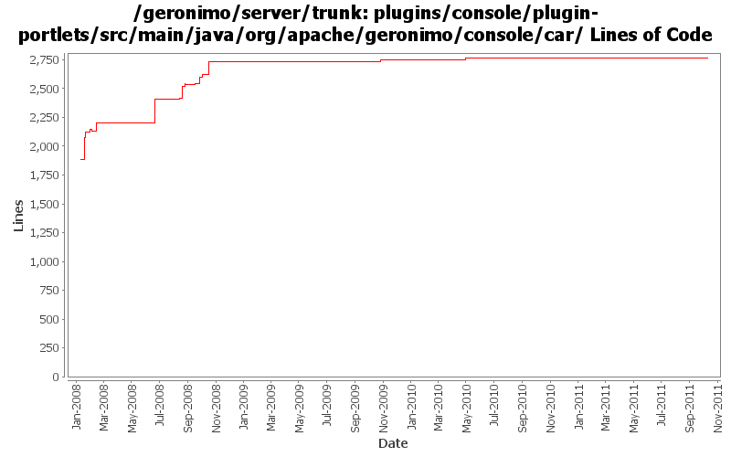

[root]/plugins/console/plugin-portlets/src/main/java/org/apache/geronimo/console/car

| Author | Changes | Lines of Code | Lines per Change |
|---|---|---|---|
| Totals | 107 (100.0%) | 1190 (100.0%) | 11.1 |
| djencks | 35 (32.7%) | 426 (35.8%) | 12.1 |
| linsun | 29 (27.1%) | 374 (31.4%) | 12.8 |
| gawor | 23 (21.5%) | 318 (26.7%) | 13.8 |
| xuhaihong | 6 (5.6%) | 39 (3.3%) | 6.5 |
| jdillon | 9 (8.4%) | 13 (1.1%) | 1.4 |
| jbohn | 1 (0.9%) | 10 (0.8%) | 10.0 |
| kevan | 3 (2.8%) | 9 (0.8%) | 3.0 |
| rwonly | 1 (0.9%) | 1 (0.1%) | 1.0 |
some codes clean up
1 lines of code changed in 1 file:
GERONIMO-6058 Replace StringBuffer usage with StringBuilder
4 lines of code changed in 3 files:
Avoid creating gbean proxies in GeronimoAsMavenServlet
15 lines of code changed in 1 file:
Clean console codes and remove unused classes
34 lines of code changed in 2 files:
GERONIMO-4621 Exception occurs when export debugviews-console-tomcat plugin(Patch from Han Hong Fang)
1 lines of code changed in 1 file:
GERONIMO-4141 display only car types on the export plugin portlet page thanks Ivan for the patch
8 lines of code changed in 1 file:
GERONIMO-4364 Split the assemblylist page to 2 pages
99 lines of code changed in 4 files:
reorganize code a bit and enable hover plugin to show desp of the plugin
21 lines of code changed in 1 file:
GERONIMO-4336 some improvements to the addRepository page of the install plugin portlet
26 lines of code changed in 4 files:
add some instruction on how to access this servlet from browser
16 lines of code changed in 1 file:
related to GERONIMO-4306 - Let's not cache the plugin list in the install plugins portlet either
2 lines of code changed in 1 file:
GERONIMO-4318 try to indicate when plugins have been installed in the current server, irrespective of whether they are in the repos
2 lines of code changed in 2 files:
add helper pages for install plugin, create plugin and server assembly portlets
58 lines of code changed in 3 files:
don't cache plugin or application module lists. Based on patch from Rex Wang (GERONIMO-4306)
5 lines of code changed in 1 file:
GERONIMO-4304 Register allowable plugin repositories, with credentials as appropriate
5 lines of code changed in 2 files:
loose the check to get appclient displayed under application plugins
2 lines of code changed in 1 file:
related to GERONIMO-4265 - use the isPluginGroup checking instead
1 lines of code changed in 1 file:
part of GERONIMO-4265: Enhance Custom server assembly portlet usability - give users 3 custom assembly modes to pick
20 lines of code changed in 3 files:
divide plugins to application plugins and system plugins in the assembly list view
111 lines of code changed in 5 files:
allow a user to click a plugin to see plugin metadata in assembly listServer page and replace some hardcoded values
3 lines of code changed in 1 file:
use name instead of moduleid and enable sort function to sort the plugins by name, category and version
7 lines of code changed in 3 files:
split plugin portlet into 3 sub portlets and other minor layout improvements (GERONIMO-3868)
211 lines of code changed in 10 files:
More loggers back to static
4 lines of code changed in 4 files:
(GERONIMO-3985) Use SLF4J as the primary logging facade for Geronimo
9 lines of code changed in 5 files:
Improvements to Assemble a Server portlet (partial patch from Joseph Leong) (GERONIMO-3856)
7 lines of code changed in 3 files:
GERONIMO-3867 Add validation to ensure a configuration is selected for export. Also some minor changes to make the handler code more consistent.
10 lines of code changed in 1 file:
made PluginInfoBean Serializable (GERONIMO-3802)
2 lines of code changed in 1 file:
Adds a confirmation page at the end of Assembling a server. Patch from Joseph Leong (GERONIMO-3802)
69 lines of code changed in 4 files:
GERONIMO-3746 Merge from branches/2.1. Patch from Joe Leong. Thanks Joe! Fixes plugin progress bar on plugin installation. Also, fixes occasional prompts for user name and password while moving from one page to the next
9 lines of code changed in 3 files:
GERONIMO-3791 Extract the dependencies from the deployed car file's environment to put in the geronimo-plugin.xml. Use previous 'direct-from-maven' dependencies for boilerplate etc that do not have config.ser files
1 lines of code changed in 1 file:
GERONIMO-3746 apply intermediate patch from JCLeong fixing some of the plugin installer issues
38 lines of code changed in 2 files:
GERONIMO-2311 Fix up plugin export, great patch from YunFeng Ma
0 lines of code changed in 2 files:
reuse cached plugin list only if the repository locations match. otherwise, plugin list might not match the selected repository
9 lines of code changed in 1 file:
GERONIMO-3607 fix up the export-server console pages
49 lines of code changed in 2 files:
GERONIMO-3607 Console pages to export a server.
331 lines of code changed in 11 files:
GERONIMO-3754 Add name/pw to sourceRepositoryFactory. Fix some problems with patch re trying to install already-installed plugins
0 lines of code changed in 2 files:
update geronimo server maven repo link, catch unknonwn host exceptions.
0 lines of code changed in 2 files:
GERONIMO-3607, sort of. Clean up plugin installation, in particular allowing import of multiple plugins in one operation. Preparatory to figuring out how to select plugins for inclusion in an assembled server
0 lines of code changed in 9 files:
GERONIMO-3732. Move the rest of deployment functionality out of console base and (mostly) into plugin-portlets. Revert the accidental menu name change for looking at web apps
0 lines of code changed in 2 files: